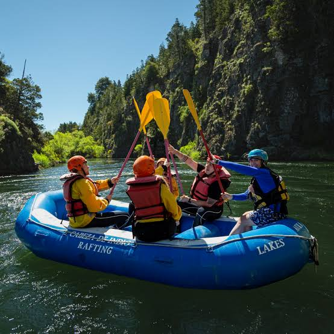

About Us

We are a passionate rafting company dedicated to creating unforgettable outdoor adventures. Our goal is to help people experience the excitement of whitewater rafting while enjoying the beauty of nature. With experienced guides, quality equipment, and a strong commitment to safety, we offer rafting trips for beginners, families, and adventure seekers. Whether you are looking for an exciting challenge or simply want to enjoy a day surrounded by nature, our team is ready to make your experience safe, fun, and memorable.